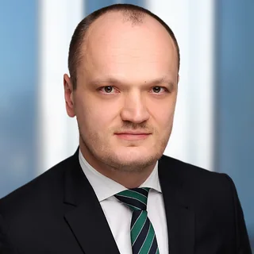
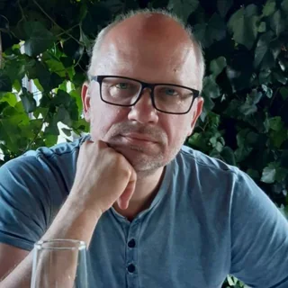
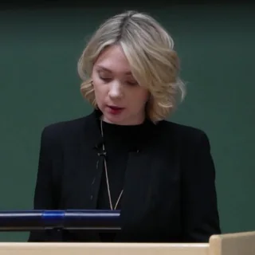

Юридический эксперт
Ярослав Кривой
Российское право · Санкции · Международный арбитраж
Экспертные заключения и показания для иностранных судов и арбитражей.
Профиль эксперта →Профессиональная сеть экспертов и юристов
Специалисты из разных организаций работают с международными вопросами. Координаторы помогают связать вашу потребность с предметом экспертизы и организовать поручение.
Ситуация, вопросы и ближайшие сроки
Подбор, объём, сроки и взаимодействие
Исследование, основания и выводы
Заключение · Консультация · Участие в процессе
Подбор под задачу
Участники профессионального круга

Юридический эксперт
Российское право · Санкции · Международный арбитраж
Экспертные заключения и показания для иностранных судов и арбитражей.
Профиль эксперта →
Юрист и медиатор
Медиация · Конституционное право · Права человека
Разрешение споров через медиацию. Исследовательский и преподавательский опыт в праве.
Профиль эксперта →
Исследователь
Исследования обучения · Образовательные технологии
PhD в образовательных науках. Исследовательская работа в Университете Оулу и Университете Тампере.
Профиль эксперта →Юрист
Экстрадиция · Право беженцев
Международная защита и вопросы, связанные с экстрадицией.
Профиль эксперта →Юридический эксперт
Уголовная юстиция · INTERPOL · Экстрадиция
Беларусь и постсоветские юрисдикции. Адвокат в Чехии и Украине.
Профиль эксперта →Об Ассоциации
Ассоциация объединяет экспертов и юристов из разных организаций, которые много лет сотрудничают друг с другом.
Мы отвечаем за организацию процессов. Эксперт отвечает за исследование и свои выводы.
Связаться с координатором →Уточняем потребность, материалы и сроки. Не требуется заранее знать, какой именно эксперт нужен.
Учитываем предмет, страну или регион экспертизы, язык и требования к участию специалиста.
Согласуем объём и стоимость, поддерживаем взаимодействие, предусматриваем обсуждение результата после его передачи.
Клиентам и представителям
Опишите ситуацию, стадию дела, ближайшие сроки и имеющиеся документы. Координатор поможет определить, какой вопрос требует экспертной оценки.
Обсудить свою ситуацию →Адвокатам и юристам
Предмет исследования, вопросы эксперту, язык, требования к документу, взаимодействие с местным представителем и последующее участие в процессе.
Обсудить экспертное поручение →Форматы работы
Сначала согласуем потребность, вопросы, объём материалов, сроки и стоимость. Затем — подходящую форму работы.
01 / Оценить
Разобраться в сложной ситуации, оценить необходимость исследования и определить вопросы специалисту.
Устная консультация или письменное резюме. Предварительное изучение документов — по согласованию.
Обсудить консультацию →02 / Исследовать
Исследование согласованных вопросов для суда, сделки или решения, требующего правовой оценки.
Краткое исследование или развёрнутое заключение с основаниями выводов и границами оценки.
03 / Участвовать
Подготовка и участие в суде или другом органе в качестве независимого эксперта либо свидетеля.
Заключение или письменные показания, когда они требуются; подготовка к опросу и участие в заседании.
Обсудить участие →Страны и регионы
Это разные характеристики. Страна, где рассматривается дело, учитывается в заявке и не ограничивает каталог экспертов.
Вопросы и разборы
Вопросы, с которых часто начинается обращение. Выберите тему, чтобы прочитать краткое пояснение.
Подготовка заключения
От описания ситуации — к задаче, на которую может ответить исследование.
Начните с обстоятельств, стадии дела, сроков и того, что требуется понять. Необязательно самостоятельно выбирать отрасль экспертизы или составлять техническое задание.
Координатор поможет уточнить потребность. Предмет и вопросы исследования затем согласуются со специалистом.
Обсудить постановку вопросов →Международные вопросы
Место рассмотрения дела и страна исследуемого права могут различаться.
Для подбора учитывается право или практика, которые нужно исследовать. Страна суда помогает определить требования к результату и взаимодействию с местным представителем.
Экспертиза может охватывать одну страну, регион или вопросы без географической привязки.
Посмотреть каталог →После передачи документа
Обсуждение выводов, использование документа и подготовка к следующим действиям.
При согласовании работы определяют, какое обсуждение и сопровождение включено: пояснение выводов, взаимодействие с адвокатом или подготовка к опросу.
Новые материалы и вопросы могут потребовать дополнительного исследования. Его объём и стоимость согласуются отдельно.
Как организовать поручение →Профессиональное сотрудничество
Приглашаем обсудить сотрудничество специалистов с опытом в праве отдельных стран, правоприменении и смежных областях экспертизы.
Предметная работа, взаимодействие с коллегами и возможность делиться знаниями в публикациях Ассоциации.
Обсудить сотрудничество ↗Предмет компетенции, страны или регионы, языки работы, опыт заключений и выступлений, предпочитаемые задачи и доступность.
Документы о квалификации и примеры работы можно согласовать для закрытого рассмотрения.
Обсуждаем опыт, области работы и условия сотрудничества. Каждое поручение подбирается отдельно с учётом компетенции и доступности специалиста.
Организационные вопросы ведёт координатор. Содержание исследования и выводы остаются ответственностью эксперта.
Обратиться
Для первичного разговора достаточно описания вопроса. Объём платной работы и стоимость согласуются до заказа.